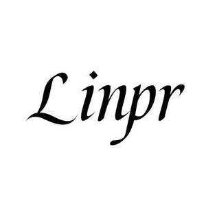

Trade Mark Journal No.2025/029 18 July 2025
UK00004231751 10 July 2025 (9,22)

- Class 9
- Battery cases; Camcorder cases; Camera cases; Carrying cases for digital music players; Cases adapted for cameras; Cases for data storage devices; Cases for MP3 players; Laptop cases; Memory card cases; Lens cases; Waterproof camera cases; Laptop bags; Bags for cameras; Bags for cameras and photographic equipment; Bags adapted for laptops; Antistatic bag; Digital organizers; Boxes [cases] for glasses; Cases for pocket calculators; Mobile phone cases.
- Class 22
- Bags for storage purposes; Bags for the storage of bulk materials; Canvas bags for laundry [not for luggage or travel]; Dust covers; Laundry bags; Sacks made of textile for packaging; Pouches of textile for packaging; Waterproof covers [tarpaulins]; Sail bags; Shoe bags for storage; Sacks or bags for the transportation or storage of materials in bulk; Bags for washing hosiery; Bags of textile for packaging; Awnings; Bags made of textile for the storage of tents; Groundsheets; Leather belts for handling loads; Belts made of leather for handling loads; Devices for securing luggage on vehicles; Cordage.
Ningbo Lingpao E-Commerce Co., Ltd
Representative: J&P Accountants Limited